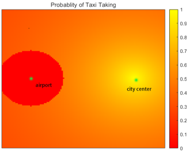

元胞自动机
1.是什么？
元胞自动机(Cellular automaton)，是一种离散模型。它是由无限个有规律、坚硬的方格组成，每格均处于一种有限状态。整个格网可以是任意有限维的。每格在t时刻的状态由t-1时刻该格的邻域决定，且演变时所有格子遵从统一规律。
简而言之，元胞自动机就是一个个排列紧密的刚体小格子，它们主要有以下特征：
- 同时性+马尔可夫性：所有格子同时变化且这一时刻的状态只与上一时刻有关而与之前的状态无关。
- 局部性：某一格子状态的变化只与其邻域有关。
- 一致性：所有元胞的变化规则相同。
- 离散性：元胞演变的时间是离散的，元胞在“元胞空间”上也是离散的。
因此，一个标准的元胞自动机$A$组成的数学表达式如下：
$A=(L,d,S,N,f)$
其中，$L$是元胞空间，$d$是元胞空间的维数，$S$是元胞的状态集合，$N$是一个元胞的邻域，$f$是元胞的演变规则。
2.怎么用？
2.1适用的问题
对一复杂系统的离散时间变化分析时，可利用元胞自动机将其离散化、单元化，通过研究每一元胞的变化，并进行计算机仿真，最终得到系统整体的变化情况。
2.2使用步骤
划分元胞$\rightarrow$划分时间$\rightarrow$确定状态$\rightarrow$确定邻域$\rightarrow$规定演变规律(物理公式、实际规律etc)
2.3举个例子
由于题目中缺少司机在从机场接客到市区过程中空载时间（比例）的数据，我利用元胞自动机进行了计算机仿真后得到了一个平均空载时间时间。
2.3.1划分元胞
以机场和城市中心连线为中线，将包含机场和城市中心的一定范围内的地图划分成二维网格，组成二维的元胞空间。
2.3.2划分时间
用离散的迭代次数来代表实际中的一小段时间，这里以机场和城市中心间的距离除以出租车的平均速度得到出租车从机场到城市中心的直达时间，再用该时间除以二者之间的元胞数即可作为元胞演变所代表的单位时间。
2.3.3确定状态
- 每个元胞有无出租车
- 每个元胞有无订单
2.3.4确定邻域
邻域为所有有相邻边的格子们。
2.3.5规定演变规律
出租车初始化：在机场外围随机生成出租车的位置。
市区订单初始化：参考无向距离场（Distance Field）的概念，将订单概率分布看作是市中心的距离场，即对整个地区进行网格划分，机场禁区内的网格订单产生概率为零，机场禁区外的网格订单产生概率与到市中心的距离成反比。
 在此基础上随机生成订单。
一次随机生成的结果如下：
- 出租车的移动策略：
- 当出租车载客时，则其每次在x\y方向上随机移动一个格子。
- 当出租车空载时，则倾向于向着市中心随即移动，即移动方向与和市中心连线方向的夹角为锐角。
2.3.6仿真结果
 |
 |
 |
|---|
3.论文表达要点
状态如何划分：这里是最好配插图的地方，可以制作一些自定义地图、类似于我的世界那样的沙盒图等等。并且讲清楚为什么要这么划分（虽然很可能是你灵光乍现感觉出来的，但是…**
“我们这个状态划分的很好啊，它有多么好呢，它可以…”**）规定演变规则：我觉得邻域划分可以写在这里，然后各种物理公式的推导、人为法则的建立等等可以写的详细一些。（**
“我们这个演化规则非常的合理啊，它有多么合理呢，它是基于…”**）结果的可视化